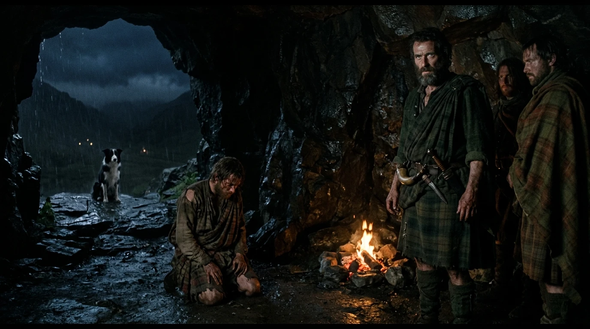
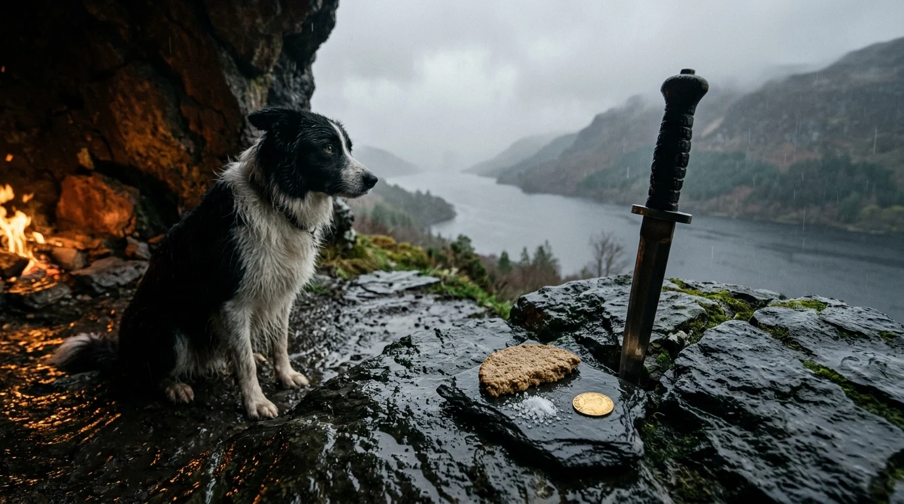

The Seven Men of Glenmoriston
July–August 1746 at the Cave of Coiraghoth (Coire Dho): Seven Starving Highland Outlaws, a £30,000 Hanover Crown Bounty, and the Unshakeable Right Hand of Ancient Sanctuary
“In late July 1746, seven outlawed, starving Highlanders hiding in the stream-cut boulder cave of Coiraghoth above Loch Ness held a £30,000 Hanover Crown bounty in the palms of their hands—enough gold to buy an earldom or rebuild every burned steading in Inverness-shire. The man kneeling by their embers was a Roman-born prince whose fatal command at Culloden had cost them their cattle, their roofs, and their brothers. Yet for three weeks they hid, fed, and guided him to safety without touching a single Hanover guinea—not out of courtly worship for a Stuart throne, but because the ancient Highland law of sanctuary (Aos-dàna / guest-right) and a Highlander’s sworn word cannot be purchased by any king.”

Hugh Chisholm, the Outlaws, the Fugitive & Silent Witness Glen
At the rain-lashed threshold of the Cave of Coiraghoth above Loch Ness sits Glen, a black-and-white Scottish Border Collie keeping silent watch beside the four relics of Highland sanctuary.
July–August 1746: The Cave of Coiraghoth (Coire Dho)
In the brutal summer following the Battle of Culloden (April 16, 1746), government Redcoat columns and Campbell militia operating out of Fort Augustus scoured the Great Glen and Inverness-shire—burning steadings, driving off cattle, and hunting Highland Jacobite fugitives. High in the rocky mountain braes of Glenmoriston, first sheltering in the stream-hidden boulder cave of Coiraghoth (Coire Dho), seven outlawed, starving Highlanders banded together to protect their families and survive on wild roots, cracked marrow bones, coarse barley oatcakes, and brine salt smuggled past night pickets.
In late July 1746, an exhausted, lice-ridden fugitive stumbled into their mountain sanctuary carrying a £30,000 Hanover Crown bounty on his head—a sum sufficient in 1746 to buy a Scottish earldom or rebuild every burned roof in Inverness-shire (tens of millions of dollars in modern purchasing power).
The tragic irony at the heart of the Glenmoriston dossier is that the seven outlawed Highlanders who risked the gallows to shelter Charles Edward Stuart were protecting a prince who had never set foot in Scotland until a year earlier, spoke with an Italian-French accent, and ultimately left their shattered clan society behind. Yet for three weeks they hid, fed, and guided him safely through the cordon of patrols without touching a penny of Hanover blood money—not out of blind courtly worship (“It was not for Charlie we stood in that cave / It was for the old law that our ancestors gave”), but out of the ancient Highland law of sanctuary, hospitality (Aos-dàna / guest-right), and sworn honor. According to Highland tradition, Hugh Chisholm vowed never again to shake another man’s hand with the right hand that had pledged that oath—not for silver, and not for fear.

“And Asked for the Shelter of Broken-Down Men”
Toggle between the Coiraghoth Cave Tableau, the outlaw silhouettes at the cave mouth with Glen, and Hugh Chisholm’s peat-blackened hand clasping the stranger’s wrist in sanctuary.
Roll of Honor: The Seven Named Highland Outlaws of Coiraghoth
Sworn on the dirk in the dark of the glen • July–August 1746The £30,000 Temptation, The Tragic Irony & The Old Law
Why did seven starving men whose cottages were in ashes and whose families were digging wild nettles in the mud refuse thirty thousand pounds of gold for a prince who had led their clans to ruin? Three historical pillars unlock the Cave of Coiraghoth.
Who Was the Fugitive in the Cave?
Explore the complete 5-part historical investigation behind the song—from Charles Edward Stuart’s birth at Rome’s Palazzo Muti (1720) and the German House of Hanover’s £30,000 bounty to the fatal charge on Drummossie Moor (Culloden), his expulsion under the 1748 Treaty of Aix-la-Chapelle, and the 34-gun Saint-Malo privateer frigate L’Heureux that carried him from Loch nan Uamh back to France.
From the Ashes of Culloden to the Cave of Coiraghoth (0:00 – 6:20)
Trace the four dramatic movements and twelve timestamped story-beat chapters of “The Seven Men of Glenmoriston” from the smoking steadings of Inverness-shire to the autumn gale at Loch nan Uamh.
Complete 12-Chapter Story-Beat Index (0:00 – 6:20)
Peat Embers & Wet Basalt: Silent Witness Glen, Sanctuary Relics & The Two Lyric Texts
“For it was not for Charlie we stood in that cave! / It was for the old law that our ancestors gave!”

Featured Single & Dual-Edition Reconciled Lyrics Vault
Complete narrative lore, acoustic architecture, YouTube music video slot, and both the Studio Master Audio Lyrics and Extended Literary Ballad Manuscript.